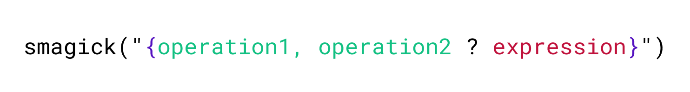

smagick: Magical string
interpolation
Laurent R. Berge
2023-06-23
Source:vignettes/smagick_walkthrough.rmd
smagick_walkthrough.rmdString interpolation is a common feature of many programming
languages and is used to insert the value of variables directly into
character strings. This is useful to compose dynamic messages in a
natural way. For example "Hello {x}" will be interpolated
as “Hello John” if x = "John".
What if you want to apply some modifications to the variable before insertion? Like normalizing the case, trimming at 40 characters, or concatenating? In general, you can’t. Well, actually you can but have to use the language’s own native tools. And it can be surprising how performing a few basic operations can quickly amount to lot of typing.
The aim of the package stringmagick is to simplify and
empower string interpolation. With the smagick function,
you can apply 50+ basic operations to interpolated variables,
interpolations can be nested, there is advanced support for
pluralization, and much more.
Before moving on, we set the global option
.smagick.class to TRUE such that the character
vectors produced by smagick are displayed nicely in this
vignette.
setSmagick(.smagick.class = TRUE)Motivating examples and advice for reading
Here’s a few things the algorithm can do (don’t worry if it looks like gibberish when first discovering it: it will make sense later!):
library(stringmagick)
name = "john doe"
smagick("Hi {title ? name}.")
#> Hi John Doe.
cars = row.names(mtcars)
print(cars)
#> [1] "Mazda RX4" "Mazda RX4 Wag" "Datsun 710"
#> [4] "Hornet 4 Drive" "Hornet Sportabout" "Valiant"
#> [7] "Duster 360" "Merc 240D" "Merc 230"
#> [10] "Merc 280" "Merc 280C" "Merc 450SE"
#> [13] "Merc 450SL" "Merc 450SLC" "Cadillac Fleetwood"
#> [16] "Lincoln Continental" "Chrysler Imperial" "Fiat 128"
#> [19] "Honda Civic" "Toyota Corolla" "Toyota Corona"
#> [22] "Dodge Challenger" "AMC Javelin" "Camaro Z28"
#> [25] "Pontiac Firebird" "Fiat X1-9" "Porsche 914-2"
#> [28] "Lotus Europa" "Ford Pantera L" "Ferrari Dino"
#> [31] "Maserati Bora" "Volvo 142E"
smagick("I like cars starting with C like {'i/^c'get, x, unik, enum.or ? cars}.")
#> I like cars starting with C like Cadillac, Chrysler or Camaro.
friends = c("Piglet", "Eeyore")
smagick("My best friend{$s, are, enum ? friends}. Who am I?")
#> My best friends are Piglet and Eeyore. Who am I?
friends = "Mercutio"
smagick("My best friend{$s, are, enum ? friends}. Who am I?")
#> My best friend is Mercutio. Who am I?If you discover this package, since it’s a lot of content, here’s some advice:
- read the first sections completely (regular interpolation, interpolation with operations, verbatim and nesting, and the operations syntax). They’re short.
- skim the operations reference
And you should be good to go for some basic usage.
Tip: don’t be afraid to try out some operations at
random (from memory), the error messages will remind you the available
operations. You can also use the argument help = TRUE to
get interactive help (use help = "regex" to perform a regex
search on the full doc!). Finally, smagick("--help") gives
you a compact help.
Once you’re a bit comfortable, here are extra sections of interest:
- group-wise operations
- conditional operations
- the if-else operator
- pluralization: must read if interested in the topic
- escaping and special cases
- creating your own operations: rather advanced
Basic interpolation
To interpolate a variable, say x, simply use
{x}.
x = "world"
smagick("hello {x}")
#> hello worldAs we can see, anything in curly brackets gets interpolated. This behavior is similar to the well known function glue from the tidyverse.
Now let’s come to what smagick really brings to the
table.
Interpolation with operations: Principle
To any interpolation you can add operations. Operators have the syntax:

Let’s take the example of the previous section and say we want to display “hello W O R L D”. This means upper casing all letters of the interpolated variable and adding a space between each of them. Let’s do it:
smagick("hello {upper, ''s, c ? x}")
#> hello W O R L DNow let’s explain what happened. Within the {}
box, we first write a set of operations, here
upper, ''s, c, then add ? and finally write
the variable to interpolate, x. The operations (detailed in
the reference section) are
upper, to upper-case all letters, ''s: to
split with the empty string, c: to concatenate the vector
that was just split with spaces (' '). The question mark
means that the expression coming after it is to be evaluated (this is
opposed to the exclamation mark presented in the next section).
The syntax is always the same:
{operations ? expression}, where the operations section is
a comma separated list of operations. These operations are of
the form 'arg'op, with arg the argument to the
operator op. These operations are performed sequentially
from left to right.
Some operations, like upper, accept options. You attach
options to an operation with a dot followed by the option name.
Formally: op.option1.option2, etc. Example:
x = "hi there. what's up? fine."
smagick("He said: {upper.sentence, Q ? x}")
#> He said: "Hi there. What's up? Fine."The general syntax for operations that take an argument and have
option flags is:

Both operators and options are partially matched. So
smagick("He said: {up.s, Q ? x}") would also work. You have
more details on the operations syntax in the syntax section.
Verbatim interpolation and nesting: Principle
Instead of interpolating a variable, say x, with
{x}, you can use an exclamation mark to trigger verbatim
evaluation. For example smagick("hello {!x}") would lead to
“hello x”. (To use ! as a regular logical operator, see the
section on special cases.) Please hold
on a little bit to see the point.
Verbatim evaluation is a powerful way to apply operations to plain text. For example:
smagick("hello {upper, ''s, c ! world}")
#> hello W O R L DBefore moving on, a necessary detail. The spaces surrounding the
exclamation mark are non necessary, but when one space is present on
both sides of the !, then the verbatim expression only
begins after the space. This is illustrated below
# The decorative space in verbatim mode
# v => adds a space before 'hi'
smagick("{upper, Q! hi}",
# v v => no space added (ie decorative space)
"{upper, Q ! hi}",
# v vv => adds a space before 'hi'
"{upper, Q ! hi}", .sep = "\n")
#> " HI"
#> "HI"
#> " HI"Nesting
The main advantage, and real power, of verbatim evaluations is
nesting. Anything in a verbatim expression becomes evaluated
with the function smagick. This means that any box
will be evaluated as previously described.
Let’s give an example. You want to write the expression of a
polynomial of order n: a + bx + cx^2 + etc.
You can do that with nesting:
n = 2
smagick("poly({n}): {' + 'c ! {letters[1 + 0:n]}x^{0:n}}")
#> poly(2): ax^0 + bx^1 + cx^2How does it work? The verbatim expression (the one following the
exclamation mark), here "{letters[1 + 0:n]}x^{0:n}", is
evaluated with smagick.
smagick("{letters[1 + 0:n]}x^{0:n}") leads to the vector
c("ax^0", "bx^1", "cx^2").
The operation ' + 'c then concatenates (or collapses)
that vector with ' + '. This value is then appended to the
previous string.
We could refine by adding a cleaning operation in which we replace
"x^0" and "^1" by the empty string. Let’s do
it:
n = 4
smagick("poly({n}): {' + 'c, 'f/x^0, ^1'clean ! {letters[1 + 0:n]}x^{0:n}}")
#> poly(4): a + bx + cx^2 + dx^3 + ex^4We obtain the desired result. Note that the clean
operation is explained in the operations reference
section.
Regular operations: General syntax
As seen in the previous sections, within a box
(i.e. "{}"), multiple operations can be performed. We can
do so by stacking the operations in a comma separated enumeration.
Operations can have arguments, and operations can also have options. The
general syntax, with argument and options, is:
smagick("{'arg1'op1.optionA.optionB, arg2 op2.optionC,
`arg3`op3, 51op4, op5 ? x}")Any blanks after the commas are discarded (inclusing tabs and newlines) so the chain of operations can be written across several lines, as above.
You can include arguments in four different ways:
- inside single or double quotes just before the operation name
(
arg1above), - verbatim, separated with a space, just before the operation name
(
arg2above), - inside bactick quotes, which will trigger evaluation of the argument
from the environment (
arg3above), - when the argument is an integer it can be juxtaposed to the opeation
name (like in
op4above).
The options are always dot separated and attached to the operation name, they are specific to each operation.
Both the operation name and the option names are partially matched.
This means, for example, that command "upper.first" is
equivalent to "up.f".
Here are examples for each types of arguments:
# quoted argument
smagick("y = {'x'paste, ' + 'c ? 1:2}")
#> y = x1 + x2
# verbatim argument, space separated
smagick("y = {x paste, ' + 'c ? 1:2}")
#> y = x1 + x2
# evaluated argument
x = "z"
smagick("y = {`x`paste, ' + 'c ? 1:2}")
#> y = z1 + z2
# digits accolated to the operator
smagick("y = {0paste, ' + 'c ? 1:2}")
#> y = 01 + 02
# options `bq` (back quote) and `a` passed to operator `enum`
smagick("y = the sum of {'x'paste, enum.bq.a ? 1:2}")
#> y = the sum of a) `x1`, and b) `x2`A few operators have two arguments. Pass multiple arguments using a pipe as follows:
smagick("{'arg1|arg2'op, 'arg1||arg2'op ? x}")You can escape the meaning of the pipe as a separator with a double backslash. Some operators accept a double pipe which modifies the behavior of the second argument. Here is an example:
x = "Quels sont ces serpents qui sifflent sur vos têtes?"
# let's shorten this
smagick("Oreste: {s, '4|..'k, c, Q ? x}")
#> Oreste: "Quel.. sont ces serp.. qui siff.. sur vos tête.."
rome = c("Rome qui t'a vu naître et que ton coeur adore",
"Rome enfin, que je hais parce qu'elle t'honore!")
# the double pipe triggers a different behavior in this operator
smagick("Camille: {s, '4||..'k, c, Q ? rome}")
#> Camille: "Rome qui t'a vu na.. et que ton co.. ad.. Rome en.. que je hais pa.. qu.. t'.."Regular operations: Reference
This section references all smagick’s regular
operations.
Basic string operations
This section describes some of the most common string operations: extracting, replacing, collapsing, splitting, etc. Because they are so common, many of these operations have a name composed of just one letter. These functions accept generic flags (“ignore”, “fixed”, “word”) in their patterns (syntax: “flags/pattern”). For more information on regex flags, see the dedicated section.
s, S, split, Split
Splits the string according to a pattern. The three operations have
different defaults: ' ' for s and
split, and ',[ \t\n]*' for S and
Split (i.e. comma separation).
When character strings are split, their identity is kept in memory so that group-wise operations can be applied. See the section on group-wise operations.
# 'S' with its default (comma separation)
smagick("{S ! romeo, juliet}")
#> romeo
#> juliet
# result with 's' is different
smagick("{s ! romeo, juliet}")
#> romeo,
#> juliet
# with argument: 's' and 'S' are identical
# note the flag 'fixed' (`f/`) to remove regex interpretation
smagick("{'f/+'s, '-'c ! 5 + 2} = 3")
#> 5 - 2 = 3
# group wise operations (here `~(sort, c)`, see dedicated section)
prince_talk = c("O that this too too solid flesh would melt",
"Thaw, and resolve itself into a dew!",
"Or that the Everlasting had not fix'd",
"His canon 'gainst self-slaughter!")
smagick("Order matters:\n{s, ~(sort, c), fill.c, lower, upper.sentence,
Q, '\n'c ? prince_talk}")
#> Order matters:
#> "Flesh melt o solid that this too too would"
#> " A and dew! Into itself resolve thaw, "
#> " Everlasting fix'd had not or that the "
#> " 'gainst canon his self-slaughter! "c, C, collapse, Collapse
To collapse (or concatenate) multiple strings into a single one. The
three operations are identical, only their defaults change. The default
is ' ' for c and collapse, and
', | and ' for C and Collapse.
The syntax of the argument is 's1' or 's1|s2'.
s1 is the string used to concatenate (think
paste(x, collapse = s1)). In arguments of the form
's1|s2', s2 will be used to concatenate the
last two elements. When the elements of the vector are split, each
original item is kept in memory so that group-wise operations can be
applied. See the section on group-wise operations.
# regular way
x = 1:4
smagick("And {' and 'c ? x}!")
#> And 1 and 2 and 3 and 4!
# with s2
smagick("Choose: {', | or 'c ? 2:4}?")
#> Choose: 2, 3 or 4?
# default of C: enumeration
wines = c("Saint-Estephe", "Margaux")
smagick("I like {C?wines}.")
#> I like Saint-Estephe and Margaux.
# default of c: space concatenation
smagick("{s, '.{5,}'get, c ! I don't like short words}")
#> don't short wordsextract, x, X
Extracts the first or multiple patterns from a string. Default
argument is '[[:alnum:]]+'. Command "extract"
accepts the option "first", and "x" and
"X" accept no option. x is an alias for
extract.first and X for extract.
Use the option "first" to extract only the first match for
each string.
When patterns are extracted, the identity of each original character string is kept in memory so that group-wise operations can be applied. See the section on group-wise operations.
x = c("margo: 32, 1m75", "luke doe: 27, 1m71")
smagick("{'^\\w+'extract ? x} is {'\\d+'extract.first ? x}")
#> margo is 32
#> luke is 27
# illustrating multiple extractions
# group-wise operation (~()) is detailed in its own section
x = c("Combien de marins, combien de capitaines.",
"Qui sont partis joyeux pour des courses lointaines,",
"Dans ce morne horizon se sont évanouis !")
smagick("Endings with i: {'i\\w*'extract, ~(', 'c), enum.1 ? x}.")
#> Endings with i: 1) ien, ins, ien, itaines, 2) i, is, intaines, and 3) izon, is.
x = c("6 feet under", "mahogany")
# single extraction
smagick("{'\\w{3}'x ? x}")
#> fee
#> mah
# multiple extraction
smagick("{'\\w{3}'X ? x}")
#> fee
#> und
#> mah
#> ogar, R, replace
Replaces a pattern with a string. The three operators are identical
and have no default. Accepts the option "first". The syntax
is 'flags/old' or 'old => new' with
'old' the pattern to find and new the
replacement. flags/ are optional regex flags. The default
for new is the empty string. On top of regular regex flags,
this operation also accepts the flag "total" which
instructs to replace the fulll string in case the pattern is found.
If the option "single" is provided, only a single
substitution is performed (the first pattern is replaced). That is, the
function base::sub is used instead of
base::gsub.
# regex without replacement (ie removing)
smagick("{'e'replace ! Where is the letter e?}")
#> Whr is th lttr ?
# regex with replacement
smagick("{'(?<!\\b)e => a'replace ! Where is the letter e?}")
#> Whara is tha lattar e?
# with option "single"
smagick("{'(?<!\\b)e => a'replace.single ! Where is the letter e?}")
#> Whare is the letter e?
# we replace the full string with the flag total (`t/`)
x = c("Where is the letter e?", "Not this way!")
smagick("{'t/e => here!'r ? x}")
#> here!
#> Not this way!clean
Replaces a pattern with a string. Similar to the operation
r, except that here the comma is a pattern separator. The
argument is of the form
"flags/pattern1, pattern2 => replacement". See detailed
explanations in str_clean().
# we use the fixed pattern to remove the regex meaning
smagick("{'f/[, ]'clean ! x[a]}")
#> xaget
Restricts the string vector to only the values respecting a pattern.
This operation has no default. Accepts the options "equal"
and "in". By default it uses the same syntax as str_get()
so that you can use regex flags and include logical operations between
regex patterns with ' & ' and ' | '. If
the option "equal" is used, a simple string equality with
the argument is tested (hence no flags are accepted). If the option
"in" is used, the argument is first split with respect to
commas and then set inclusion is tested.
x = row.names(mtcars)
# we only keep models containing "Merc" and ending with a letter ([[:alpha:]]$)
smagick("Mercedes models: {'Merc & [[:alpha:]]$'get, '^.+ 'r, C ? x}.")
#> Mercedes models: 240D, 280C, 450SE, 450SL and 450SLC.
models = c("Merc 230", "Merc 450SE", "Merc 480")
# we only ekep the ones in the set
smagick("Mercedes models: {`models`get.in, C ? x}.")
#> Mercedes models: Merc 230 and Merc 450SE.is
Detects if a pattern is present in a string, returns a logical
vector. This operation has no default. Mostly useful as the final
operation in a str_ops()
call. By default it uses the same syntax as str_is()
so that you can use regex flags and include logical operations between
regex patterns with ' & ' and ' | '. If
the option "equal" is used, a simple string equality with
the argument is tested (hence no flags are accepted). If the option
"in" is used, the argument is first split with respect to
commas and then set inclusion is tested.
which
Returns the index of string containing a specified pattern. With no
default, can be applied to a logical vector directly. By default it uses
the same syntax as str_which()
so that you can use regex flags and include logical operations between
regex patterns with ' & ' and ' | '. If
the option "equal" is used, a simple string equality with
the argument is tested (hence no flags are accepted). If the option
"in" is used, the argument is first split with respect to
commas and then set inclusion is tested. Mostly useful as the final
operation in a str_ops()
call.
Operations changing the length or the order
first
Keeps only the first n elements.
smagick("First 3 mpg values: {3 first, C ? mtcars$mpg}.")
#> First 3 mpg values: 21, 21 and 22.8.
# you could have done the same with regular R in the expression...
smagick("First 3 mpg values: {C ? head(mtcars$mpg, 3)}.")
#> First 3 mpg values: 21, 21 and 22.8.
# ...but not in the middle of an operations chain
smagick("First 3 integer mpg values: {'!f/.'get, 3 first, C ? mtcars$mpg}.")
#> First 3 integer mpg values: 21, 21 and 26.Negative numbers as argument remove the first n values.
You can add a second argument in the form 'n1|n2'first in
which case the first n1 and last n2 values are
kept; n1 and n2 must be positive numbers.
smagick("Letters in the middle: {13 first, 5 last, C ? letters}.")
#> Letters in the middle: i, j, k, l and m.
smagick("First and last letters: {'3|3'first, C ? letters}.")
#> First and last letters: a, b, c, x, y and z.
smagick("Last letters: {-21 first, C ? letters}.")
#> Last letters: v, w, x, y and z.K
Keeps only the first n elements; has more options than
first. The syntax is 'n'K,
'n|s'K, 'n||s'K. n provides the
number of elements to keep. If s is provided and the number
of elements are greater than n, then in 'n|s'
the string s is added at the end, and if
'n||s' the string s replaces the nth element.
The string s accepts specials values: + :n: or
:N: which gives the total number of items in digits or
letters (N) + :rest: or :REST: which gives the
number of elements that have been truncated in digits or letters
(REST)
sort
Sorts the vector in increasing order. Accepts an optional argument
and the option "num".
If an argument is provided, it must be a regex pattern that will be
applied to the vector using str_clean().
The sorting will be applied to the modified version of the vector and
the original vector will be ordered according to this sorting.
# first modifying the string before sorting
# here the regex first removes the first word, meaning that we sort on the last names
x = c("Jon Snow", "Khal Drogo")
smagick("{'.+ 'sort, C?x}")
#> Khal Drogo and Jon SnowThe option "num" sorts over a numeric version (with
silent conversion) of the vector and reorders the original vector
accordingly. Values which could not be converted are last.
x = "Mark is 34, Bianca is 55, Odette is 101, Julie is 21 and Frank is 5"
# sort on the "character string" number
smagick("{', | and 's, '\\D'sort, C ? x}")
#> Odette is 101, Julie is 21, Mark is 34, Frank is 5 and Bianca is 55
# we extract the numbers, then convert to numeric, then sort
smagick("{', | and 's, '\\D'sort.num, C ? x}")
#> Frank is 5, Julie is 21, Mark is 34, Bianca is 55 and Odette is 101Important note: the sorting operation is applied before any character conversion. If previous operations were applied, it is likely that numeric data were transformed to character.
dsort
Sorts the vector in decreasing order. It accepts an optional argument
and the option "num". See the operation "sort"
for a description of the argument and the option.
smagick("5 = {dsort, ' + 'c ? 2:3}")
#> 5 = 3 + 2unik
Makes the string vector unique.
smagick("Iris species: {unik, upper.first, C ? iris$Species}.")
#> Iris species: Setosa, Versicolor and Virginica.each
Repeats each element of the vector n times. Option
"c" then collapses the full vector with the empty string as
a separator.
times
Repeats the vector sequence n times. Option
"c" then collapses the full vector with the empty string as
a separator.
smagick("What{6 times.c ! ?}")
#> What??????rm
Removes elements from the vector. Options: "empty",
"blank", "noalpha", "noalnum",
"all". The optional argument represents the
pattern used to detect strings to be deleted.
By default it removes empty strings. Option "blank"
removes strings containing only blank characters (spaces, tab, newline).
Option "noalpha" removes strings not containing letters.
Option "noalnum" removes strings not containing alpha
numeric characters. Option "all" removes all strings
(useful in conditions, see the dedicated section). If an argument is
provided, only the options "empty" and "blank"
are available.
nuke
Removes all elements, equivalent to rm.all but possibly
more explicit. Useful in conditions, see the dedicated section.
insert
Inserts a new element to the vector. Options: "right"
and "both". Option "right" adds the new
element to the right. Option "both" inserts the new element
on the two sides of the vector.
smagick("{'3'insert.right, ' + 'c ? 1:2}")
#> 1 + 2 + 3Formatting operations
lower
Lower cases the full string.
x = "MesSeD uP CaSe"
smagick("from a {x} to {lower?x}")
#> from a MesSeD uP CaSe to messed up caseupper
Upper cases the full string. Options: "first" and
"sentence". Option "first" upper cases only
the first character. Option "sentence" upper cases the
first letter after punctuation.
x = "hi. how are you? fine."
smagick("{upper.sentence ? x}")
#> Hi. How are you? Fine.title
Applies a title case to the string. Options: "force" and
"ignore". Option "force" first puts everything
to lowercase before applying the title case. Option
"ignore" ignores a few small prepositions (“a”, “the”,
“of”, etc).
ws
Normalizes whitespaces (WS). It trims the whitespaces on the edges
and transforms any succession of whitespaces into a single one. Can also
be used to further clean the string with its options. Options:
"punct", "digit", "isolated".
Option "punct" cleans the punctuation. Option
"digit" cleans digits. Option "isolated"
cleans isolated letters. WS normalization always come after any of these
options. Important note: punctuation (or digits) are
replaced with WS and not the empty string. This means
that smagick("ws.punct ! Meg's car") will become
"Meg s car".
x = " I should? review 85 4 this text!!"
smagick("v0: {x}",
"v1: {ws ? x}",
"v2: {ws.punct ? x}",
"v3: {ws.punct.digit ? x}",
"v4: {ws.punct.digit.isolated ? x}", .sep = "\n")
#> v0: I should? review 85 4 this text!!
#> v1: I should? review 85 4 this text!!
#> v2: I should review 85 4 this text
#> v3: I should review this text
#> v4: should review this textformat, Format
Applies the base R’s function base::format() to the
string. By default, the values are left aligned, even numbers
(differently from base::format()’s behavior). The upper
case command (Format) applies right alignment. Options:
"0", "zero", "right",
"center". Options "0" or "zero"
fills the blanks with 0s: useful to format numbers. Option
"right" right aligns, and "center" centers the
strings.
%
Applies base::sprintf() formatting. The syntax is
'arg'% with arg an sprintf formatting, or directly the
sprint formatting.
smagick("pi = {%.3f ? pi}")
#> pi = 3.142stopwords
Removes basic English stopwords (the snowball list is used). The
stopwords are replaced with an empty space but the left and right WS are
untouched. So WS normalization may be needed (see operation
ws).
ascii
Turns all letters into ASCII with transliteration. Failed
translations are transformed into question marks. Options:
"silent", "utf8". By default, if some
conversion fails a warning is prompted. Option "silent"
disables the warning in case of failed conversion. The conversion is
done with base::iconv(), option "utf8"
indicates that the source endocing is UTF-8, can be useful in some
cases.
author = "Laurent Bergé"
smagick("This package has been developped by {ascii ? author}.")
#> Warning: In str_to_ascii(x, options):
#> When transforming to ASCII, there was 1 failed encoding. Attribute
#> `isFailed` is created (note that you can only access it if the variable
#> is not transformed).
#> (Ignore this message with the `silent` option [ex: `ascii.silent`]. Pass
#> the native encoding as an option?)
#> This package has been developped by Laurent Berg'e.n, N: Formatting integers
Formats integers by adding a comma to separate thousands. Options:
"letter", "upper", "0",
"zero", "roman", "Roman". The
option "letter" writes the number in letters (large numbers
keep their numeric format). The option "upper" is like the
option "letter" but uppercases the first letter. Options
"0" or "zero" left pads numeric vectors with
0s. The options "roman" and "Roman" write the
integer in Roman with utils::as.roman. The lower case
version writes them in lower case. The upper case command
(N) adds the option "letter".
x = c(5, 12, 52123)
smagick("She owes {n, '$'paste, C ? x}.")
#> She owes $5, $12 and $52,123.
# option 0: all same width, no ',' for thousands
smagick("|---|\n{n.0, '\n'c ? x}")
#> |---|
#> 00005
#> 00012
#> 52123
# option "upper"
n = 5
smagick("{n.upper ? n} is my favourite number.")
#> Five is my favourite number.
# N: like "n.letter"
x = 5
smagick("He's {N ? x} years old.")
#> He's five years old.
# roman
smagick("What's nicer? {c?11:13}, {n.roman, c?11:13} or {n.Roman, c?11:13}?")
#> What's nicer? 11 12 13, xi xii xiii or XI XII XIII?nth, Nth: Numbered position
When applied to a number, this operator writes them as a rank.
Options: "letter", "upper",
"compact".
Option "letter" tries to write the numbers in letters,
but note that it stops at 20. Option "upper" is the same as
"letter" but uppercases the first letter. Option
"compact" aggregates consecutive sequences in the form
"start_n_th to end_n_th".
smagick("They arrived {nth.compact ? 5:20}.")
#> They arrived 5th to 20th.The upper case command (Nth) adds the option
"letter".
ntimes, Ntimes: Number of times
Write numbers in the form n times. Options:
"letter", "upper". Option
"letter" writes the number in letters (up to 100). Option
"upper" does the same as "letter" and
uppercases the first letter.
smagick("They lost {C ! {ntimes ? c(1, 12)} against {S!Real, Barcelona}}.")
#> They lost once against Real and 12 times against Barcelona.The upper case command (Ntimes) adds the option
"letter".
x = 5
smagick("This paper was rejected {Ntimes ? x}...")
#> This paper was rejected five times...firstchar, lastchar: First/last characters
To select the first/last characters of each element. Negative numbers remove the first/last characters.
k, shorten, Shorten: Shortens character strings
To keep only the first n characters (like
firstchar but with more options). (Note that k
stands for “keep” and exists for historical reasons.) Available options:
"include", "dots". The argument can be of the
form 'n' or 'n|s' with n a number
and s a string. n provides the number of
characters to keep. Optionnaly, only for strings whose length is
greater than n, after truncation, the string
s is appended at the end.
By default, if argument s is provided, strings longer
than n end up at size n + nchar(s). If option
"include" is provided, the strings are guaranteed to be of
maximum size n, even after the string s has
been appended. Example: if n=4 and s="..",
then “hello” becomes “hell..” without "include", and “he..”
with it.
Option "dots": if strings are longer than
n+1, they are truncated at n-1 and two dots
are appended. For example if n = 3, then “hello” becomes
“he..”. Disregards the argument s. The operation
"Shorten" (upper case), is with the option
"dots".
Note that another way to add the option "include" is to
use a double pipe for the argument s, like in
'n||s'.
x = "long sentence"
smagick("v0: {x}",
"v1: {4 shorten ? x}",
"v2: {'4|..'shorten ? x}",
"v3: {'4|..'shorten.include ? x}",
"v4: {4 shorten.dots ? x}", .sep = "\n")
#> v0: long sentence
#> v1: long
#> v2: long..
#> v3: lo..
#> v4: lon..fill
Fills the character strings up to a size. Options:
"right" or "center". Default is left-alignment
of the strings.
The argument is optional and can be of the form 'n' or
'n|s'. By default if no argument is provided, of if
n=0,n is equal to the maximum character length
of the vector. The optional argument s is a symbol used to
fill the blanks. By default s is equal to a white
space.
Option "right" right aligns and "center"
centers the strings.
See help for str_fill()
for more information.
life = "full of sound and fury, Signifying nothing"
smagick("{'[ ,]+'s, upper.first, fill.center, q, '\n'c ? life}")
#> ' Full '
#> ' Of '
#> ' Sound '
#> ' And '
#> ' Fury '
#> 'Signifying'
#> ' Nothing '
# fixing the length and filling with 0s
smagick("{'5|0'fill.right, C ? c(1, 55)}")
#> 00001 and 00055paste
Pastes a custom character string to all elements of the string. This
operation has no default. Options: "both",
"right", "front", "back",
"delete". By default, a string is pasted on the left.
Option "right" pastes on the right and "both"
pastes on both sides. Option "front" only pastes on the
first element while option "back" only pastes on the last
element. Option "delete" first replaces all elements with
the empty string.
smagick("6 = {'|'paste.both, ' + 'c ? -3:-1}")
#> 6 = |-3| + |-2| + |-1|Other operations:
num
Converts to numeric. Options: "warn",
"soft", "rm", "clear". By
default, the conversion is performed silently and elements that fail to
convert are turned into NA. Option "warn" displays a
warning if the conversion to numeric fails. Option "soft"
does not convert if the conversion of at least one element fails,
leading to a character vector. Option "rm" converts and
removes the elements that could not be converted. Option
"clear" turns failed conversions into the empty string, and
hence lead to a character vector.
enum
Enumerates the elements. It creates a single string containing the comma separated list of elements. If there are more than 7 elements, only the first 6 are shown and the number of items left is written.
smagick("enum ? 1:5")
#> enum ? 1:5You can add the following options:
-
q,Q, orbq: to quote the elements -
or,nor: to finish with an ‘or’ (or ‘nor’) instead of an ‘and’ -
i,I,a,A,1: to enumerate with this prefix, like in: i) one, and ii) two - a number: to tell the number of items to display
x = c("Marv", "Nancy")
smagick("The murderer must be {enum.or ? x}.")
#> The murderer must be Marv or Nancy.
x = c("oranges", "milk", "rice")
smagick("Shopping list: {enum.i.q ? x}.")
#> Shopping list: i) 'oranges', ii) 'milk', and iii) 'rice'.
# enum is made for display: when vectors are too long, they are truncated
# default is at 7
x = smagick("x{sample(100, 30)}")
smagick("The problematic variables are {'x'sort.num, enum ? x}.")
#> The problematic variables are x3, x5, x8, x10, x13, x19 and 24 others.
# you can augment or reduce the numbers to display with an option
smagick("The problematic variables are {'x'sort.num, enum.3 ? x}.")
#> The problematic variables are x3, x5 and 28 others.len, Len
Gives the length of the vector. Options "letter",
"upper", "format". Option
"letter" writes the length in words (up to 100). Option
"upper" is the same as letter but uppercases the first
letter. Option "format" add comma separation for
thousands.
smagick("Size = {len.format ? 1:5000}")
#> Size = 5,000The upper case command (Len) adds the option
"letter".
smagick("Its size is {Len ? 1:8}")
#> Its size is eightwidth
Formats the string to fit a given width by cutting at word
boundaries. Accepts arguments of the form 'n' or
'n|s', with n a number and s a
string. An argument of the form 'n|s' will add
s at the beginning of each line. Further, by default a
trailing white space is added to s; to remove this
behavior, add an underscore at the end of it. The argument
n is either an integer giving the target character width
(minimum is 15), or it can be a fraction expressing the target size as a
fraction of the current screen. Finally it can be an expression that
uses the variable .sw which will capture the value of the
current screen width.
x = "this is a long sentence"
smagick("------ version 0 ------\n{x}",
"------ version 1 ------\n{15 width ? x}",
"------ version 2 ------\n{'15|#>'width ? x}",
"------ version 3 ------\n{'15|#>_'width ? x}", .sep = "\n")
#> ------ version 0 ------
#> this is a long sentence
#> ------ version 1 ------
#> this is a long
#> sentence
#> ------ version 2 ------
#> #> this is a
#> #> long
#> #> sentence
#> ------ version 3 ------
#> #>this is a
#> #>long sentenceGroup-wise operations
In smagick, the operations s (split) and
extract keep a memory of the strings that were split
(i.e. they provide multiple results for each initial string
element).
Use the tilde operator, of the form ~(op1, op2), to
apply operations group-wise, to each of the split strings. Better with
an example.
x = c("Oreste, Hermione", "Hermione, Pyrrhus", "Pyrrhus, Andromaque")
smagick("Troubles ahead: {S, ~(' loves 'c), C ? x}.")
#> Troubles ahead: Oreste loves Hermione, Hermione loves Pyrrhus and Pyrrhus loves Andromaque.Almost all operations can be applied group-wise (although only operations changing the order or the length of the strings really matter, see the dedicated section).
Conditional operations
There are two operators to apply operations conditionally:
if and vif, the latter standing for
verbatim if.
The syntax of if is
if(cond ; ops_true ; ops_false) with cond a
condition (i.e. logical operation) on the value being interpolated,
ops_true a comma-separated sequence of operations if the
condition is TRUE and ops_false an
optional a sequence of operations if the condition is
FALSE.
Ex.1: Let’s take a sentence, delete words of less than 4 characters, and trim words of 7+ characters.
x = "Songe Céphise à cette nuit cruelle qui fut pour tout un peuple une nuit éternelle"
smagick("{s, if(.nchar<=4 ; nuke ; '7|..'k), c ? x}")
#> Songe Céphise cette cruelle peuple éternel..Let’s break it down. First the sentence is split w.r.t. spaces
(command s), leading to a vector of words. Then we use the
special variable .nchar in if’s condition to
refer to the number of characters of the current vector (the words). The
words with less than 4 characters are nuked (i.e. removed), and the
other words are trimmed at 7 characters ('7|..'k). Finally
the modified vector of words is collapsed with the command
c, leading to the result.
The condition cond accepts the following special values:
. (the dot), .nchar, .C,
.len, .N. The dot, ., refers to
the current vector. .nchar represent the number of
characters of the current vector (equivalent to nchar(.)).
.C is an alias to .nchar. .len
represent the length of the current vector (equivalent to
length(.)). .N is an alias to
.len.
In Ex.1 the condition led to a vector of length greater than 1 (length = number of words), triggerring element-wise operations. If a condition leads to a result of length 1, then the operations are applied to the full string vector. Contrary to element-wise conditions for which operations modifying the length of the vectors are forbidden (apart from nuking), such operations are fine in full-string conditions.
Ex.2: we write the sum of several elements, if the vector is longer than 4, we replace all remaining elements with an ellispsis.
# same expression for two values of x give different results
x_short = smagick("x{1:4}")
# the false statement is missing: it means that nothing is done is .N<=4
smagick("y = {if(.N>4 ; 3 first, '...'insert.right), ' + 'c ? x_short}")
#> y = x1 + x2 + x3 + x4
# here equiv to: smagick("y = {' + 'c ? x_short}")
x_long = smagick("x{1:10}")
smagick("y = {if(.N>4 ; 3 first, '...'insert.right), ' + 'c ? x_long}")
#> y = x1 + x2 + x3 + ...
# here equiv to: smagick("y = {3 first, '...'insert.right, ' + 'c ? x_long}")For vif, the syntax is
vif(cond ; verb_true ; verb_false) with
verb_true a verbatim value with which the vector will be
replaced if the condition is TRUE. This is similar for
verb_false. The condition works as in if.
Ex.3: we want to replace all values lower than 10 by the the string “<10”, and then create an enumeration.
In Ex.3 the condition is of the same length as the vector, so an element-wise operation is triggered. Conditions of length 1 apply the replacement to the full vector. Knowing this, let’s redo Ex.3 differently:
x = smagick("x{1:10}")
smagick("y = {vif(.N>4 ; {x[1]} + ... + {last?x} ; {' + 'c?x}) ? x}")
#> y = x1 + ... + x10Let’s break it down. If the length of the vector is greater than 4
(here it’s 10), then the full string is replaced with
"{x[1]} + ... + {last?x}". Since this string contains curly
brackets, interpolation applies. Hence we obtain the string
"x1 + ... + x10". Finally, this is collated to
"y = " leading to the result.
If the vector were of length lower than 4, it would have been replaced with “{’ + ’c?x}”, which will be interpolated.
The vif condition allows the use of ‘.’ to refer to the
current value in verb_true and verb_false, as
illustrated by the last example.
Ex.5: we take in numeric values, keep only the last 4 values, append
x for odd numbers and y for even numbers, we
further revert the order of the even numbers.
smagick("{4 last, vif(. %% 2 ; x{.} ; y{rev?.}), C ? 1:11}")
#> y10, x9, y8 and x11Let’s break it down. We take in 1:11, and after the
command 4 last we’re left with 8:11. Then
vif applies. The elements for which the condition,
. %% 2, is true are c(9, 11) and these
elements are transofrmed into c("x9", "x11") thanks to
"x{.}". The elements for which the condition is false are
c(8, 10). These elements are transformed into
c("y10", "y8") due to "y{rev?.}". Each element
of the vector is then replaced with these values, here’s a sketch of
what happens: vec[cond==TRUE] = c("x9", "x11") and
vec[cond==FALSE] = c("y10", "y8"). This leads to the
result.
Special interpolation: if-else
Using an ampersand (“&”) as the first character of an interpolation leads to an if-else operation. Using two ampersands (“&&”) leads to a slightly different operation described at the end of this section.
The syntax is as follows:
{&cond ; verb_true ; verb_false} with cond
a condition (i.e. logical operation), verb_true a verbatim
value with which the vector will be replaced if the condition is
TRUE and verb_false an optional
verbatim value with which the vector will be replaced if the condition
is FALSE. If not provided, verb_false is
considered to be the empty string unless the operator is the
double ampersand described (&&) at the end of this
section.
Note that in cond, you can use the function
len, an alias to length.
Ex.1: we take a vector and compose a message depending on its length.
If its length is lower than 10 then we write the message
"x is short", otherwise we write "x is long",
and insert "very" depending on the number of digits.
x = 1:5
smagick("x is {&len(x)<10 ; short ; {`log10(.N)-1`times, ''c ! very }long}")
#> x is short
x = 1:50
smagick("x is {&len(x)<10 ; short ; {`log10(.N)-1`times, ''c ! very }long}")
#> x is long
x = 1:5000
smagick("x is {&len(x)<10 ; short ; {`log10(.N)-1`times, ''c ! very }long}")
#> x is very very longIf a condition leads to a result of length 1, the full string is
replaced by the verbatim expression. Further, this expression will be
interpolated if requested. This was the case in Ex.1 where
verb_false was interpolated.
If the condition uses a variable, in later interpolations you can refer to the first variable present in the condition with ‘.’, and use ‘.len’ or ‘.N’ to refer to its length.
If the condition’s length is greater than 1, then each logical values
equal to TRUE is replaced by verb_true, and
FALSE values are replaced with verb_false.
There can be interpolation on the values verb_true and
verb_false. In that case the interpolation must result into
a vector of either length 1 or a length equal to the condition. Then
element-wise replacements are made, a la base::ifelse.
Ex.2: illustration of element-wise replacements.
x = 1:4
y = letters[1:4]
smagick("{&x %% 2 ; odd ; {y}}")
#> odd
#> b
#> odd
#> dIn that example, when x is odd, it is replaced with
"odd", and when even it is replaced with the elements of
y.
Using the two ampersands operator (&&) is like
the simple ampersand version but the default for verb_false
is the variable used in the condition itself. So the syntax is
{&&cond ; verb_true} and it does not
accept verb_false.
Ex.3: let’s write the integer i in letters when equal to
3 only.
Special interpolation: Pluralization
There is advanced support for pluralization which greatly facilitates the writing of messages in natural language.
Pluralization: Principles
There are two ways to pluralize: over length or over value. To trigger a “pluralization” interpolation use as first character:
-
$to pluralize over the length of a variable (see Ex.2) -
#to pluralize over the value of a variable (see Ex.1)
Ex.1: we add an ending ‘s’ based on a number.
x = 5
smagick("I bought {N?x} book{#s}.")
#> I bought five books.
x = 1
smagick("I bought {N?x} book{#s}.")
#> I bought one book.The syntax is {#plural_ops ? variable} or
{#plural_ops} where plural_ops are specific
pluralization operations which will be described below. The
pluralization is perfomed always with respect to the value of a
variable.
You can either add the variable explicitly
({#plural_ops ? variable}) or refer to it implicitly
({#plural_ops}). If implicit, then the algorithm will look
at the previous variable that was interpolated and pluralize over it.
This is exaclty what happens in Ex.1 where x was
interpolated in {N?x} and the plural operation
s (in {#s}) applies to x. It
would have been equivalent to have {#s ? x}. If a variable
wasn’t interpolated before, then the next interpolated variable will be
used (see Ex.2). If no variable is interpolated at all, an error is
thrown.
Ex.2: we add an ending ‘s’ and conjugate the verb ‘be’ based on the length of a vector.
x = c("J.", "M.")
smagick("My BFF{$s, are} {C?x}!")
#> My BFFs are J. and M.!
x = "J."
smagick("My BFF{$s, are} {C?x}!")
#> My BFF is J.!As you can notice in Ex.2, you can chain operations. In that case a whitespace is automatically added between them.
Now let’s come to the specific pluralization operations, which are different from regular operations.
Pluralization: Regular operations
s, es
Adds an "s" (or "es") if it is plural (>
1), nothing otherwise. Accepts the option 0 or
zero which treats a 0-length or a 0-value as plural.
nfiles = 1
smagick("We've found {&nfiles;{.};no} file{#s}.")
#> We've found 1 file.
nfiles = 0
smagick("We've found {&nfiles;{.};no} file{#s}.")
#> We've found no file.
nfiles = 0
smagick("We've found {&nfiles;{.};no} file{#s.0}.")
#> We've found no files.
nfiles = 4
smagick("We've found {&nfiles;{.};no} file{#s.0}.")
#> We've found 4 files.y or ies
Adds an ‘y’ if singular and ‘ies’ if plural (>1). Accepts the
option 0 or zero which treats a 0-length or a
0-value as plural.
n, N, len, Len
Add the number of elements ("len") or the value
("n") of the variable as a formatted number or in letters
(upper case versions). Accepts the options letter (to write
in letter) and upper (to uppercase the first letter).
nth, ntimes
Writes the value of the variable as an order (nth) or a frequence
(ntimes). Accepts the option letter to write the numbers in
letters (uppercase version of the operator does the same).
n = 2
smagick("Writing the same sentence {#Ntimes ? n} is unnecessary.")
#> Writing the same sentence twice is unnecessary.is, or any verb
Conjugates any English verb appropriately depending on context. Any command that is not recognized as one of the commands previously described is treated as a verb.
Simply add an upper case first to upper case the conjugated verb.
Multiple verbs are illustrated in the example below. It also anticipaed the conditional statements described in the next section.
Ex.3: multiple verbs and conditional statements.
pple = c("Francis", "Henry")
smagick("{$enum, is, (a;) ? pple} tall guy{$s}.",
"{$(He;They), like} to eat donuts.",
"When happy, at the pub {$(he;they), goes}!",
"{$Don't, (he;they)} have wit, {$(he;they)} who {$try}?", .sep = "\n")
#> Francis and Henry are tall guys.
#> They like to eat donuts.
#> When happy, at the pub they go!
#> Don't they have wit, they who try?
pple = "Francis"
smagick("{$enum, is, (a;) ? pple} tall guy{$s}.",
"{$(He;They), like} to eat donuts.",
"When happy, at the pub {$(he;they), goes}!",
"{$Don't, (he;they)} have wit, {$(he;they)} who {$try}?", .sep = "\n")
#> Francis is a tall guy.
#> He likes to eat donuts.
#> When happy, at the pub he goes!
#> Doesn't he have wit, he who tries?Pluralization: Conditional statements
On top of the previous operations, there is a special operation allowing to add verbatim text depending on the situation. The syntax is as follows:
-
(s1;s2): adds verbatim ‘s1’ if singular and ‘s2’ if plural (>1) -
(s1;s2;s3): adds verbatim ‘s1’ if zero, ‘s2’ if singular (=1) and ‘s3’ if plural -
(s1;;s3): adds verbatim ‘s1’ if zero, ‘s3’ if singular or plural (i.e. >=1)
These case-dependent verbatim values are interpolated (if appropriate). In these interpolations you need not refer explicitly to the variable for pluralization interpolations.
x = 0
smagick("{#(Sorry, nothing found.;;{#N.upper} match{#es, were} found.)?x}")
#> Sorry, nothing found.
x = 1
smagick("{#(Sorry, nothing found.;;{#N.upper} match{#es, were} found.)?x}")
#> One match was found.
x = 3
smagick("{#(Sorry, nothing found.;;{#N.upper} match{#es, were} found.)?x}")
#> Three matches were found.For more example of conditional statements, see Ex.3 described in verb operations.
Escaping and special cases
The opening and closing brakets, {}, are special
characters and cannot be used as regular text. To bypass their special
meaning, you need to escape them with a double backslash.
You only need to escape the special delimiters which the algorithm is currently looking for. In the examples below, you don’t need to escape the closing bracket in Ex.1 since no box was open. On the other hand, you need to escape it in Ex.2.
# the closing bracket does not have a special meaning since no open bracket
smagick("open = \\{, close = }")
#> open = {, close = }
# we need to escape the first closing bracket
smagick("many {5 times.c ! \\}}")
#> many }}}}}Alternatively, use the argument .delim to change the
delimiters.
Ex.3: changing the delimiter.
smagick("Here I {interpolate} with .[this] ", .delim = ".[ ]", this = ".[]")
#> Here I {interpolate} with .[]You can also use the following hack: Ex.4: using regular interpolation to pass verbatim text.
smagick("I {'can {write} {{what}} I want'}")
#> I can {write} {{what}} I wantSince {expr} evaluates expr, the stuff
inside the box, you can pass a character string and it will
stay untouched.
In the few operations expecting a semi-colon (if-else and pluralization), it can also be escaped with a double backslash.
is_c = TRUE
smagick("{&is_c ; int i =1\\; ; i = 1}")
#> int i =1;
is_c = FALSE
smagick("{&is_c ; int i =1\\; ; i = 1}")
#> i = 1In interpolations, the exclamation mark (!) signals a
verbatim expression. But what if you use it to mean the logical
operation not in an operation-free interpolation? In that case,
you need a hack: use a question mark (?) first to indicate
to the algorithm that you want to evaluate the expression.
Ex.4: using the ? hack to use ! as a
logical operation.
smagick("{!TRUE} is {?!TRUE}")
#> TRUE is FALSECreating your own operations
You can add any arbitraty operation to smagick. You only
need to use the function smagick_register.
First you need to create a function that will be applied to a character vector. That function must have at least the arguments ‘x’ and ‘…’. Additionnaly, it can have the arguments: ‘argument’, ‘options’, ‘group’, ‘group_flag’.
Second, this function must return a vector or a list of two items:
x and group. The latter form is only used in
functions modifying the length or order of the vector.
Finally, you need to register the function with
smagick_register and provide it an alias. Optionnally, you
can provide a list of valid options.
Ex.1: a new operation adding markdown emphasis.
# A) define the function
fun_emph = function(x, ...) paste0("*", x, "*")
# B) register it
smagick_register(fun_emph, "emph")
# C) use it
x = str_vec("right, now")
smagick("Take heed, {emph, c? x}.")
#> Take heed, *right* *now*.Above, we have created a simple functon that adds markdown emphasis to words.
More generally, the function taken by smagick_register
is called internally by smagick in the form
fun(x, argument, options, group, group_flag). Here is the
meaning of the arguments:
-
x: the value to which the operation applies. -
argument: the quotedsmagickargument (always character). -
options: a character vector ofsmagickoptions. -
group: an index of the group to which belongs each observation (integer). -
group_flag: value between 0 and 2; 0: no grouping operation requested; 1: keep track of groups; 2: apply grouping.
The two last arguments, group and
group_flag, are of use only in group-wise operations only
if fun changes the length or the order of vectors.
Let’s add an argument and an option to the "emph"
operation that we defined in Ex.1.
Ex.2: new operation with argument and option.
fun_emph = function(x, argument, options, ...){
arg = argument
if(nchar(arg) == 0) arg = "*"
if("strong" %in% options){
arg = paste0(rep(arg, 3), collapse = "")
}
paste0(arg, x, arg)
}
smagick_register(fun_emph, "emph", "strong")
x = str_vec("right, now")
smagick("Take heed, {'_'emph.s, c? x}.")
#> Take heed, ___right___ ___now___.
# In smagick_register, the valid_option argument is used to validate them.
try(smagick("Take heed, {'_'emph.aaa, c? x}."))
#> Error : in smagick("Take heed, {'_'emph.aaa, c? x}."):
#> CONTEXT: Problem found in "Take heed, {'_'emph.aaa, c? x}.",
#> when dealing with the interpolation `{'_'emph.aaa, c? x}`. See
#> error below:
#> The option `aaa` is not valid for the current operation.
#> FYI the option available is `strong`.Finally let’s illustrate an example with group-wise axareness.
Ex.3: we create a function that only keeps variable names (ex: x5, is_num, etc).
keep_varnames = function(x, group, group_flag, ...){
is_ok = grepl("^[[:alpha:].][[:alnum:]._]*$", x)
if(group_flag != 0){
group = group[is_ok]
group = stringmagick:::cpp_recreate_index(group)
}
res = list(x = x[is_ok], group = group)
return(res)
}
smagick_register(keep_varnames, "keepvar")
expr = c("x1 + 52", "73 %% 5 == x", "y[y > .z_5]")
smagick("All vars: {'[^[:alnum:]_.]+'s, keepvar, unik, bq, C ? expr}.")
#> All vars: `x1`, `x`, `y` and `.z_5`.
# thanks to the group flag, we can apply group-wise operations
smagick("Vars in each expr:\n",
"{'\n'c ! - {1:3}) {'[^[:alnum:]_.]+'s, keepvar, bq, ~(unik, C) ? expr}}")
#> Vars in each expr:
#> - 1) `x1`
#> - 2) `x`
#> - 3) `y` and `.z_5`